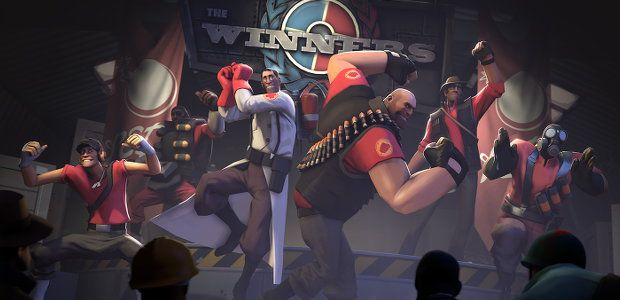

Игровые режимы
а также что в них делать
Игровых режимов в Тим Фортресе великое множество, начиная от всеми известного режима "Царь горы", заканчивая довольно интересным режимом "Дай пасс"
Есть 2 типа режимов, Основные и Дополнительные. В основных есть такие режимы как:
- 1.Захват-Удержание
- 2.Захват флага
- 3.Контрольные точки
- 4.Царь горы
- 5.Сопровождения
А в дополнительных есть:
- 1.Гонка вагонеток
- 2.Супер-манн
- 3.Дай пасс!
Есть режими в которых обе команды сражаються за одну цель, это: Захват флага, Царь горы, Гонка вагонеток, дай пасс!, супер-манн. А есть те в которых каждая команда делает одну цель, к примеру: Сопровождения - синие должны дотолкать вагонетку на базу красных, а в свою очередь красные не должны допустить вагонетку на свою базу, иначе они проиграют.
Существует еще один режим, но уже PvE. Это - Манн против Машин. В этом режиме как никогда нужна командая работа, так как роботов против вас десятки, а то и тысячи, а вас всего 6. Но у вас есть плюсы - вы можете покупать улутшения на свои характеристики к примеру: скорость, скорость перезарядки, высота прыжка и т.д. Но учтите, для того что-бы играть в этот режим вам нужно будет купить пропуск, без него вы не сможете играть на официальных серверах, а только на серверах сообщества.
Соревновательный режим
Этот режим ничем не отличаеться от класического, но в этом режиме есть так скажем звания. Чем больше побед - тем больше звания. Просто так в соревновательный режим играть нельзя, что юы играть в соревновательный режим нужно: иметь 3 уровень в класике, подключить свой телефон и также иметь полную версию ТФ2 - самый простой способ ее получить это купить предмет в магазине МАННко.
Так же в соревновательном режиме нет возможности выбирать карту и играть на ней (как допустим в класике) карта выбираеться рандомно. Забыл сказать, что в соревновательном режиме, играют 6 на 6, не больше, и не менше, если какой нибудь игрок выйдет из матча, то игра не начнеться и можно будет просто выйти. Если же вы все-таки выйшли и мачта во время игры - то вам будет дан бан на соревновательные игры в ближайшое время.
